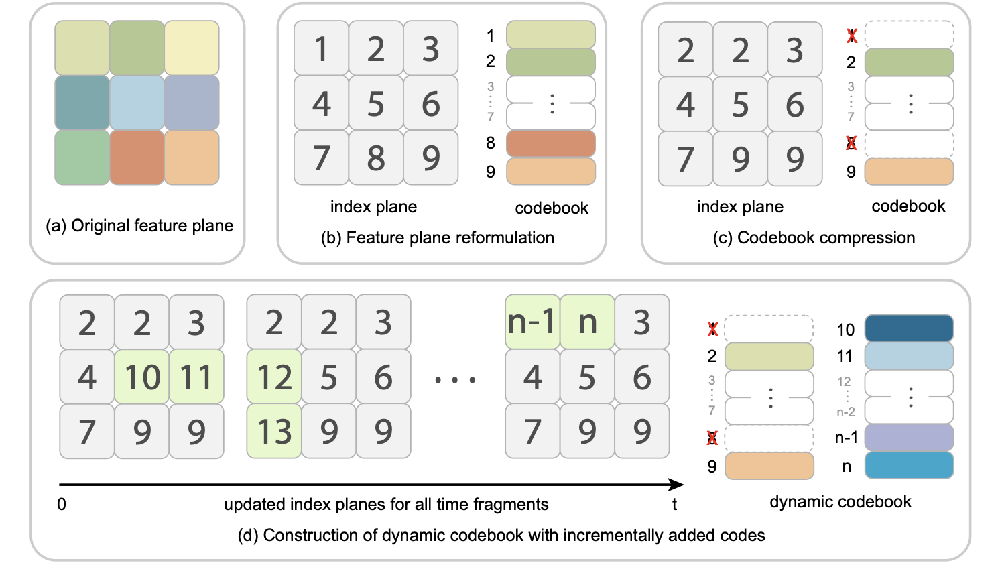

|
Yunzhi Yan Hi👋! I'm a second-year Ph.D. student at Zhejiang University, advised by Prof. Sida Peng and Prof. Xiaowei Zhou. I obtained my B.Eng in Computer Science from Zhejiang University with honor degree at Chu Kochen Honors College in 2023. I am currently a research intern at ByteDance GenAI, working with Yi Jiang. My research interests lie in the fields of computer vision, computer graphics and machine learning. |

|
Publications* denotes equal contributions. |
|
StreetCrafter: Street View Synthesis with Controllable Video Diffusion Models
Yunzhi Yan*, Zhen Xu*, Haotong Lin, Haian Jin, Haoyu Guo, Yida Wang, Kun Zhan, Xianpeng Lang, Hujun Bao, Xiaowei Zhou, Sida Peng Project Page / Paper / Code |
|
|
Street Gaussians: Modeling Dynamic Urban Scenes with Gaussian Splatting
Yunzhi Yan, Haotong Lin, Chenxu Zhou, Weijie Wang, Haiyang Sun, Kun Zhan, Xianpeng Lang, Xiaowei Zhou, Sida Peng ECCV 2024 Project Page / Paper / Code |
|
|  |
Compact Neural Volumetric Video Representations with Dynamic Codebooks
Haoyu Guo, Sida Peng, Yunzhi Yan, Linzhan Mou, Yujun Shen, Hujun Bao, Xiaowei Zhou NeurIPS 2023 Project Page / Paper / Code |
|
Representing Volumetric Videos as Dynamic MLP Maps
Sida Peng*, Yunzhi Yan*, Qing Shuai, Hujun Bao, Xiaowei Zhou CVPR 2023 Project Page / Paper / Code |
|
|
ENeRF: Efficient Neural Radiance Fields for Interactive Free-viewpoint Video
Haotong Lin, Sida Peng Zhen Xu, Yunzhi Yan, Qing Shuai, Hujun Bao, Xiaowei Zhou, SIGGRAPH Asia 2022 Project Page / Paper / Code |
Experience |
|
ByteDance, FoundationVision
Research Intern. |
|
|
Li Auto, Autonomous Driving Team
Research Intern. Nov. 2023 - Nov. 2024 |
|
|
Ant Group, Ant Research
Research Intern. Mar. 2023 - Aug. 2023 |
|
The website template was borrowed from Jon Barron. |